AI Integration
Integrated an AI/ML model from GCP via Retrofit and added generative AI chat using the Gemini API for diabetes-related questions.
Mobile App Project
DiaBite is a diabetes companion app built with MVVM architecture, combining diabetes risk analysis, food nutrition guidance, analysis history, articles, reminders, gamification, and generative AI support through Gemini.
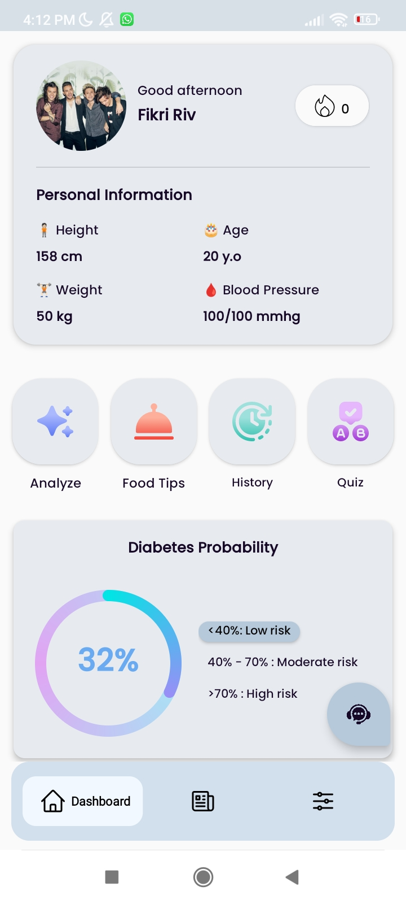
My work focused on connecting the app experience with AI services, local data, authentication, and retention features so users could analyze, learn, return, and keep track of their diabetes-related habits.
Integrated an AI/ML model from GCP via Retrofit and added generative AI chat using the Gemini API for diabetes-related questions.
Implemented OTP authentication and Room database support to store analysis history locally inside the app.
Fetched diabetes-related articles and improved the experience with animated splash, onboarding, and Lottie animations.
Added streak tracking, trivia, reminders, and home widgets to encourage repeated healthy engagement.
Built the app using MVVM architecture to keep screens, state, and data flows organized and maintainable.
Connected analysis, food tips, nutrition details, history, articles, and settings into a coherent Android app journey.
The screenshots are ordered to reflect the intended user journey: first-time entry, diabetes analysis, dashboard review, learning features, personalization, and AI assistance.
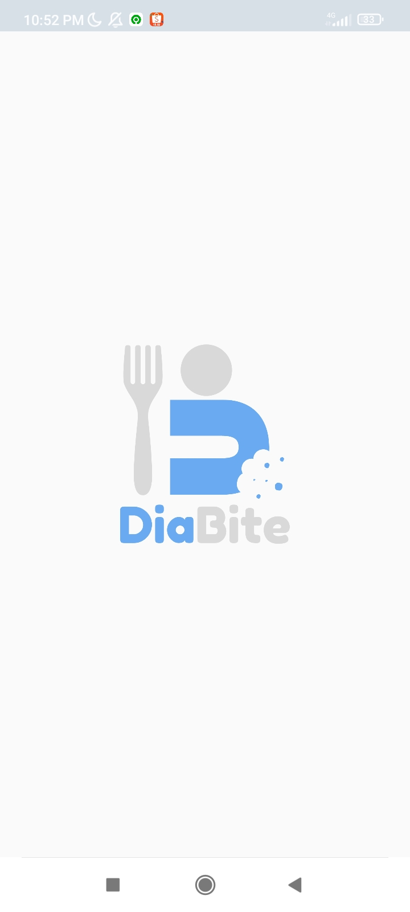
The app begins with a branded splash screen, then introduces the value proposition through onboarding pages before entering the main experience.
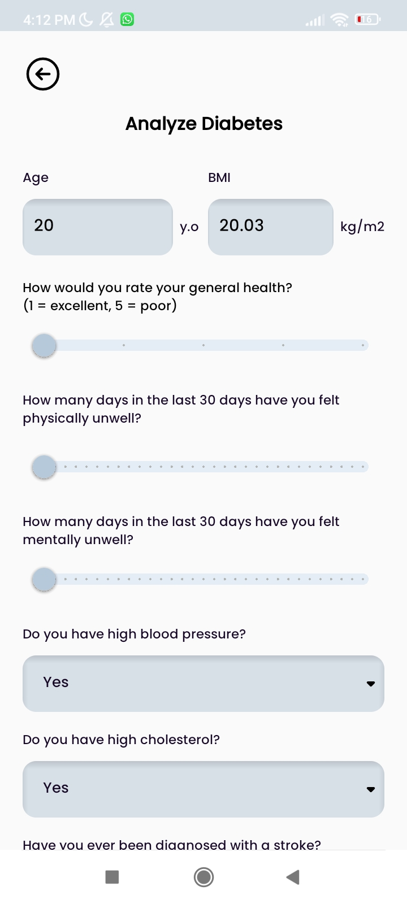
Users fill health-related inputs, submit the form, and receive a diabetes risk result from the integrated model.
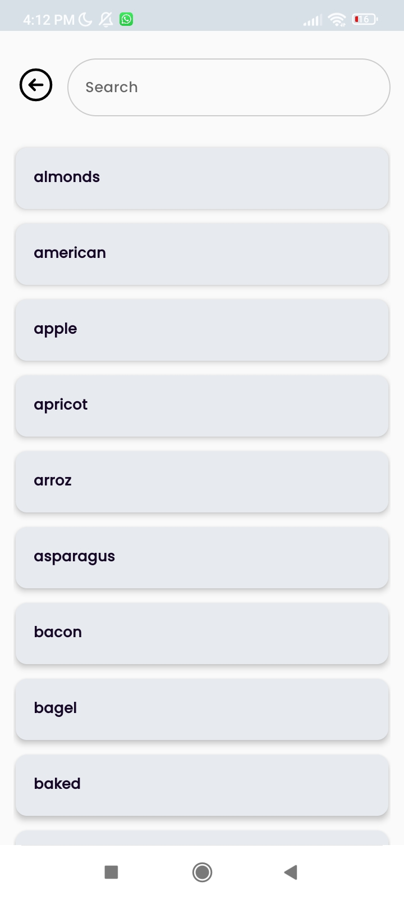
Food tips include searchable items, suggestions, alternatives, avoid lists, and nutrition facts for selected foods.
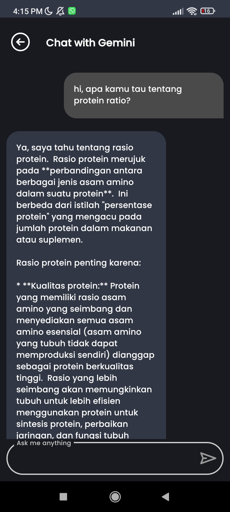
Gemini API support lets users ask diabetes and nutrition-related questions directly from the app.
Ordered from first launch to advanced features, these screens document the core app journey and the parts I contributed to.
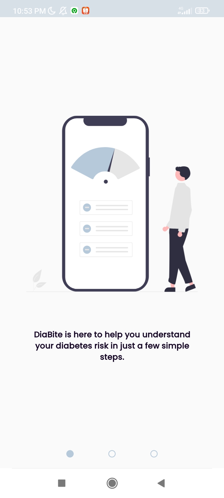
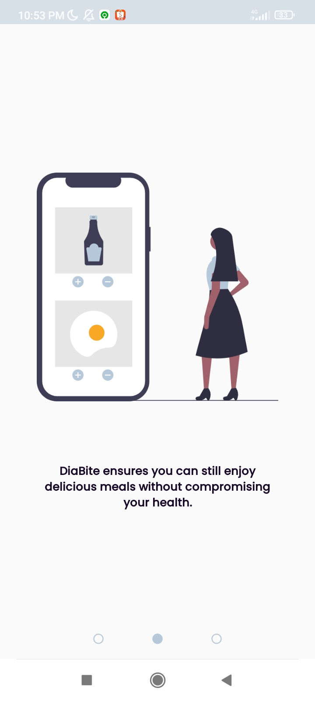
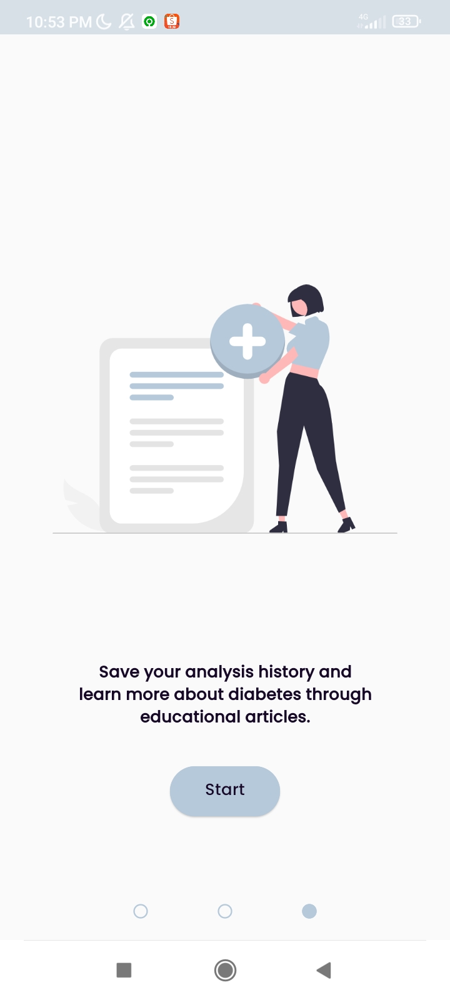
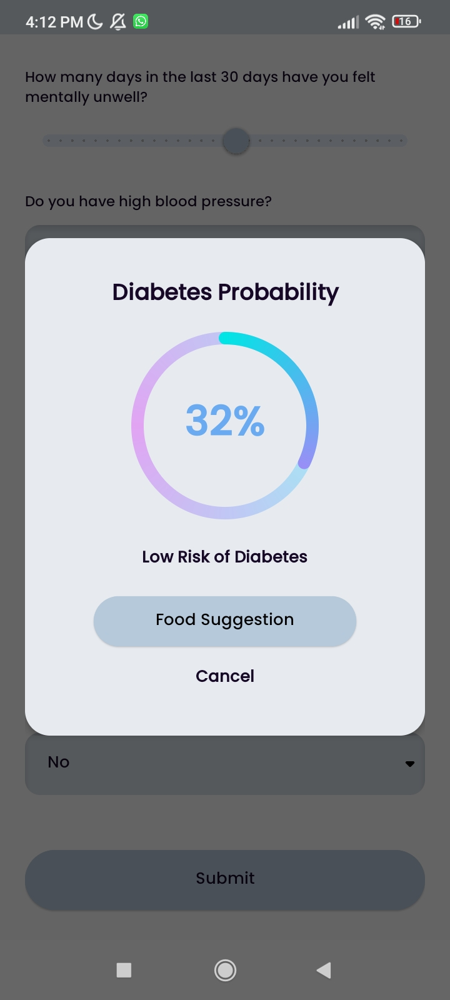
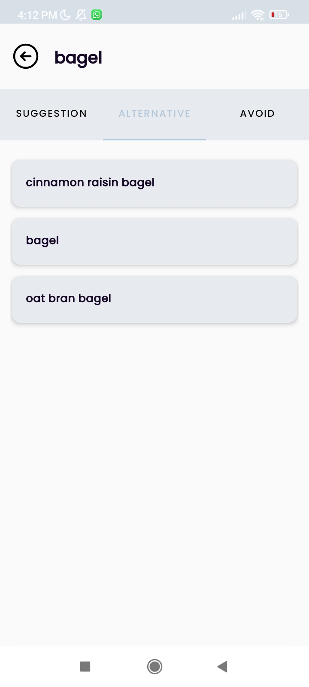
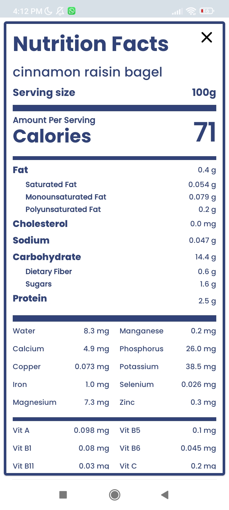
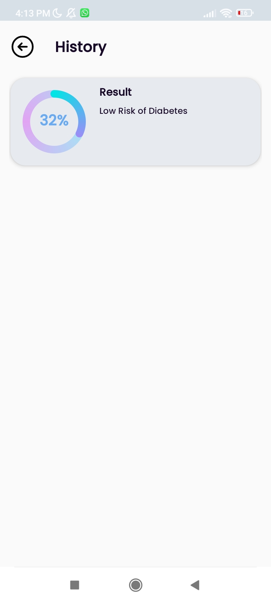
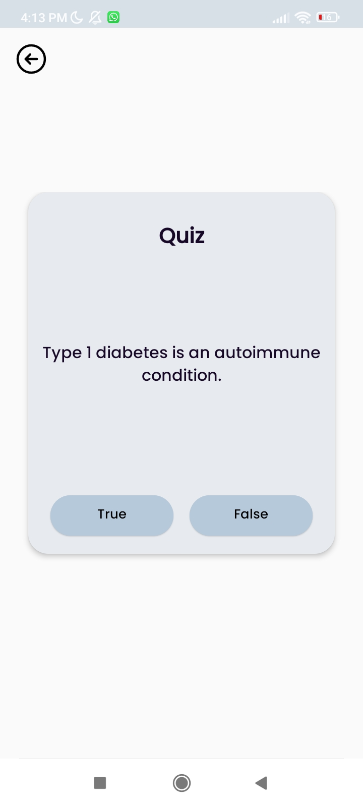
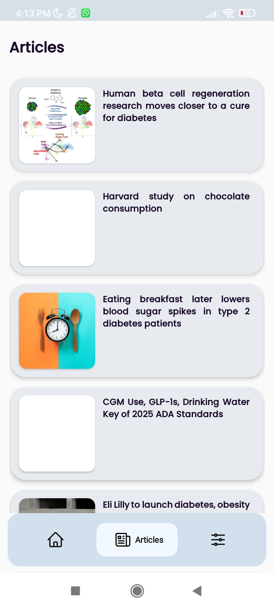
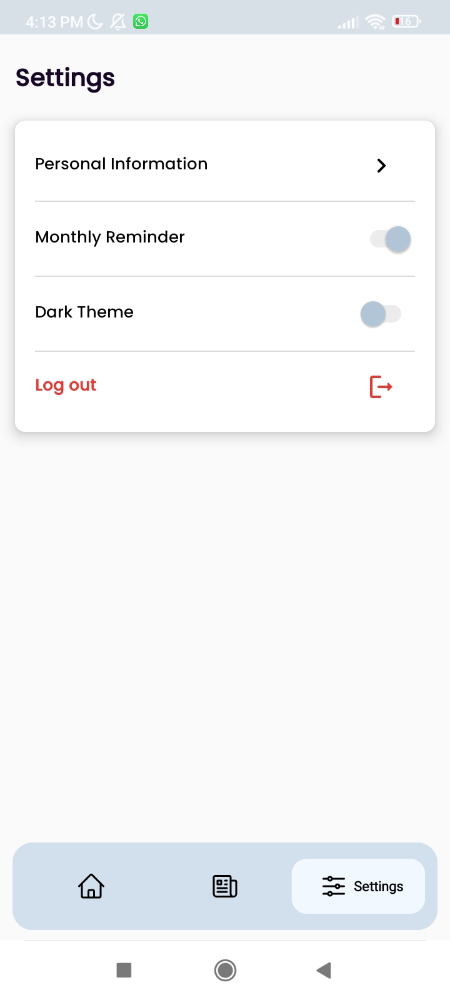
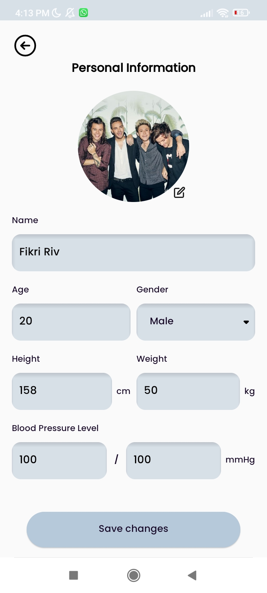
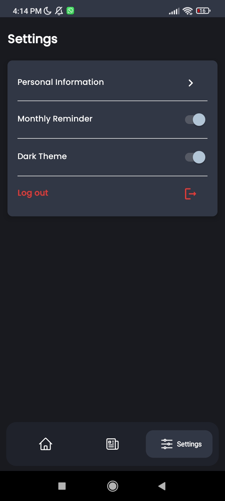